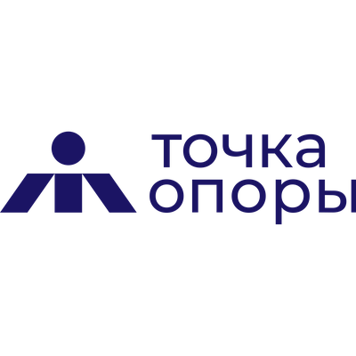
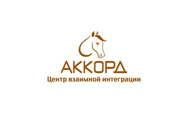
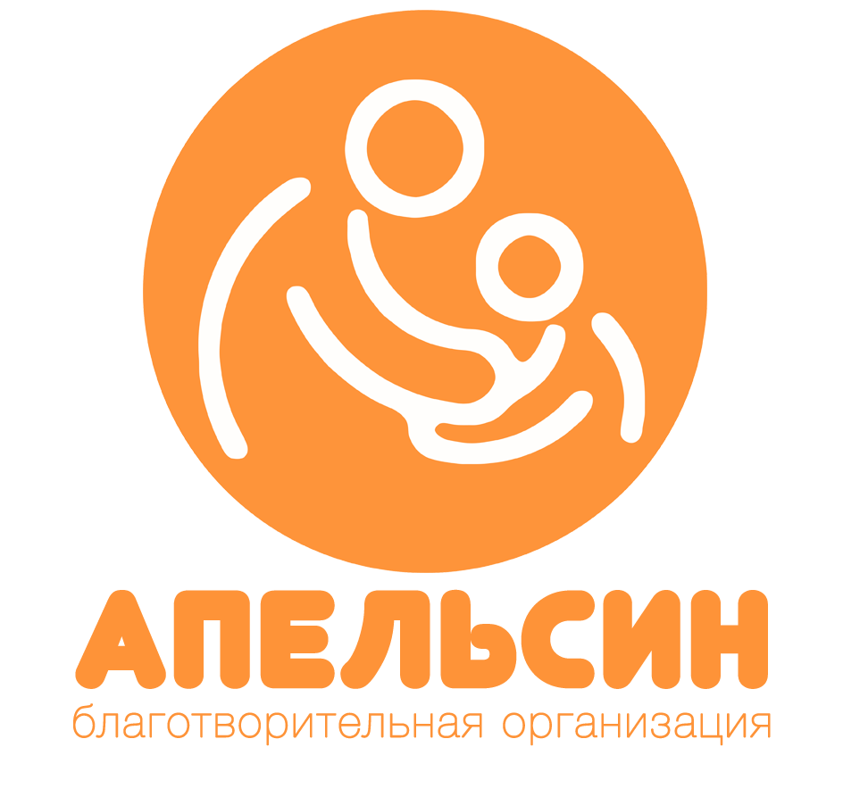
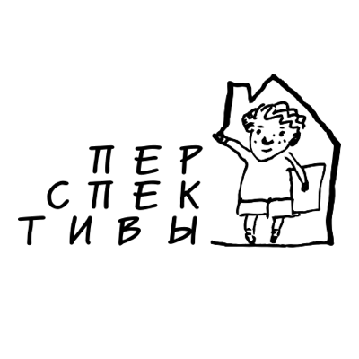
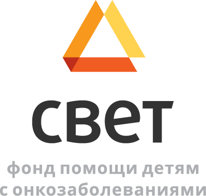
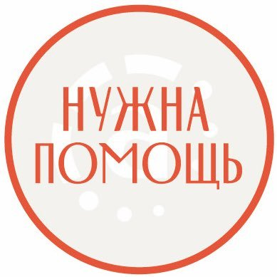
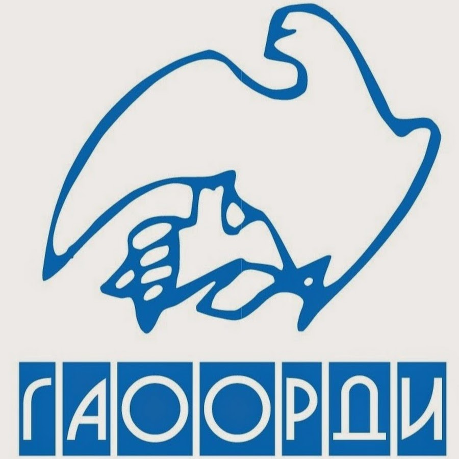
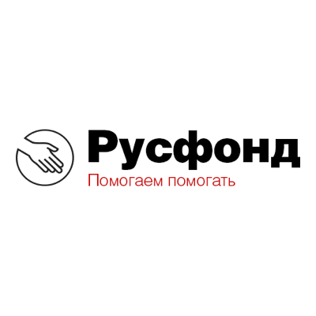

Фильтр
Фонд "Точка Опоры"
Фонд был зарегистрирован в 2010 году. Его учредители были обеспокоены печальной статистикой - спортсмены из Санкт-Петербурга всё реже попадали в национальную сборную. Очевидно, что причина была не в отсутствии талантливых спортсменов и достойных тренеров, а в острой нехватке средств на подготовку и участие в дорогостоящих международных рейтинговых соревнованиях.
Цель фонда: "содействие развитию адаптивного спорта в Санкт-Петербурге, социализации людей с инвалидностью через спорт и формированию уважительного отношения в обществе к индивидуальным особенностям человека."
Сайт: Точка Опоры
Центр взаимной интеграции "Аккорд"
Социально ориентированная некоммерческая общественная организация. Основное направление деятельности – иппотерапия, адаптивная верховая езда (проведение оздоровительных, реабилитационных, психокоррекционных, развивающих, рекреационных и спортивных занятий с использованием лошади).
Сайт: Аккорд
Благотворительная организация "Апельсин"
Отличительной чертой данной организации является оказание индивидуальной поддержки человеку посредством общения и доверительных отношений. Доброволец вместе с Организацией разрабатывает индивидуальную стратегию развития по улучшению качества жизни для своего подопечного, что позволяет оказывать более качественное и комплексное сопровождение.
Цель организации: "помочь каждому ребёнку и молодому человеку с инвалидностью, оставшемуся без попечения родителей, проживающим в детских домах и интернатах, максимально раскрыть и реализовать свои возможности."
Сайт: Апельсин
Фонд "Перспективы"
"Перспективы" - это партнёрство благотворительных общественных организаций, которое работает в Санкт-Петербурге с 1996 года. Фонд сопровождает, поддерживает и защищает детей, взрослых и их семьи. Сотрудничает с организациями и людьми,которые разделяют их ценности.
Цель фонда: "создание для детей с тяжелыми умственными и физическими нарушениями таких условий жизни, которые максимально похожи на условия жизни обычных детей, а также нормализация среды, в которой им приходится жить, когда они становятся взрослыми."
Сайт: Перспективы
Общественная благотворительная организация "Покровская община"
Санкт-Петербургская общественная благотворительная организация "Покровская община" зарегистрирована в 2000 году, но считается, что начала свою деятельность с 90-х годов 20 века.
Миссия организации: "помощь бедным, престарелым, бездомным и одиноким людям в Мариинской больнице и на дому, забота о стариках в доме престарелых «Покровская обитель», кров бездомным инвалидам в Приюте временного пребывания."
Сайт: Покровская община
Фонд "Свет"
Благотворительный фонд был основан несколькими петербуржцами в 2008 году. Помогает онкобольным детям на всей территории РФ и детям из других государств, имеющим необходимость лечиться в российских клиниках. Выделяют средства на необходимые издержки, которые не покрывает госудрство, а также содействуют в развитии детских онкологических клиник.
Цель фонда: "сделать лечение онкобольных детей максимально эффективным и помочь семьям справиться с психологическими нагрузками и материальными сложностями во время лечения."
Сайт: Свет
Фонд "Нужна помощь"
"Нужна помощь" - это так называемый "фонд фондов", он собирает пожертвования для других некоммерческих организаций. Здесь Вы можете быть абсолютно уверены в том, что поможете проверенному фонду, а также будете знать структуру того, как работают общественные организации.
Цель фонда: "популяризация благотворительности и волонтерства. Мы добиваемся, чтобы в СМИ выходило больше публикаций на благотворительную тематику. Мы хотим стать проектом успешных историй. Мы приложим все усилия, чтобы каждая история или проблема, описанная нами, была благополучно разрешена."
Сайт: Русфонд
Ассоциация родителей детей-инвалидов "ГАООРДИ"
Санкт-Петербургская ассоциация общественных объединений родителей детей-инвалидов "ГАООРДИ" начала свою работу в 1992 году На данный момент - это 24 общественные организации родителей детей с инвалидностью, а также с редкими и генетическими заболеваниями.
Сегодня: "вместе мы системно и последовательно реализуем программы, которые позволяют нашим детям быть самостоятельными в открытом обществе, учиться и трудиться, дружить и заниматься творчеством, получать новые впечатления и просто быть счастливыми."
Сайт: ГАООРДИ
Русфонд
Российский фонд помощи создан в 1996 году как благотворительная программа Издательского дома «Коммерсантъ» для оказания помощи авторам отчаянных писем в газету «Коммерсантъ», на данный момент является одним из крупнейших фондов России.
Миссия фонда: "помощь тяжелобольным детям, содействие развитию гражданского общества, внедрению высоких медицинских технологий."
Сайт: Русфонд